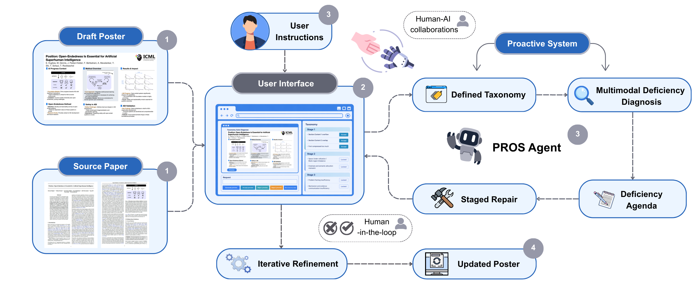

ICML

University of Washington
Hi! I am a rising senior at the University of Washington studying statistics, informatics, and human-centered AI. My research focuses on proactive AI agents, human-AI interaction, and AI for scientific exploration, with a broader interest in systems that understand users, reason under uncertainty, and provide calibrated, context-aware support.
I am advised by Professor Chirag Shah at the UW InfoSeeking Lab, and work with Professor Jiawei Han at the UIUC CS Data Mining Group.

Xingda Lyu, Xinye Luo, Honglin Lu, and Shiqi Yang.
Workshop on Human-Interactive Generation and Editing (HiGen), CVPR, 2026.
Xingda Lyu, Gongfu Lyu, Zitai Yan, and Yuxin Jiang.
In Proceedings of the International Conference on Computing and Data Science (CDS), 2025.
Xingda Lyu. Lightning talk and poster presentation, ACM CHIIR Workshop on Human-Centered Proactive & Personalized Agents.
Kirandeep Kaur, Vinayak Gupta, Xingda Lyu, Aditya Gupta, and Chirag Shah. Poster presentation, Amazon Research Day, AI Co-Scientist.
I am developing empirical work on proactive agents that better understand user needs and context under uncertainty. This work builds on my ICML 2026 position paper and studies how agents can provide useful support while remaining calibrated in when and how they intervene.
In collaboration with Stella Li, I am working on calibration challenges in proactive and personalized LLM assistants, studying support that accounts for both user requests and broader interaction context.
Research Intern with Prof. Jiawei Han. I conduct research on retrieval-augmented generation and AI for chemistry, including applications to retrosynthesis.
Research with Prof. Chirag Shah and PhD mentor Kirandeep Kaur on proactive AI agents and human-AI interaction under uncertainty.
I lead PROS, a project on proactive multimodal refinement of scientific posters using editable document representations, including system design, LLM/VLM-based diagnosis, evaluation design, team coordination, and writing.
I led a biomedical and multi-hop QA project supervised by Prof. David P. Woodruff, covering retrieval and model-adaptation pipeline design, evaluation, error analysis, and writing.
Seattle, WA. Built automated data-quality pipelines over 300K+ transportation records using Python and SQL, designed routing optimization models projecting $5M+ in annual savings and 23% route utilization improvement, and built anomaly-detection analyses.
San Jose, CA. Built a refinance decision tool using real-time mortgage rate data, an interactive dashboard for mortgage scenario analysis, and delinquency risk models using GLM, Random Forest, and XGBoost.